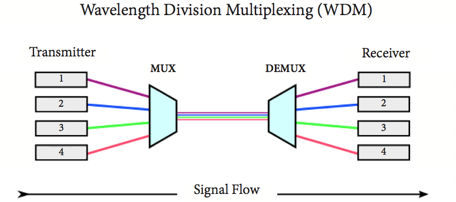

Conmutación
Una red conmutada consta de una serie de nodos interconectados, llamados conmutadores. Los conmutadores son dispositivos capaces de crear conexiones temporales entre dos o más dispositivos vinculados al conmutador.
Los sistemas finales (dispositivos de comunicación) están etiquetados como A, B, C, D, etc., y los conmutadores están etiquetados como I, II, III, IV y V. Cada conmutador está conectado a múltiples enlaces.
Redes de conmutación de circuito
Consta de un conjunto de conmutadores conectados por enlaces físicos.
Una conexión entre dos estaciones es una ruta dedicada formada por uno o más enlaces.
Una red conmutada por circuitos está formada por un conjunto de conmutadores conectados mediante enlaces físicos, en el que cada enlace está dividido en n canales.
Hemos mostrado explícitamente los símbolos de multiplexación para enfatizar la división del enlace en canales, aunque la multiplexación se puede incluir implícitamente en la estructura de conmutación. Aquí destacan varios puntos: La conmutación de circuitos tiene lugar en la capa física. Antes de iniciar la comunicación, las estaciones deben realizar una reserva de los recursos que se utilizarán durante la comunicación. Los datos transferidos entre dos estaciones no están empaquetados (transferencia de la señal a través de la capa física). Durante la transferencia de datos no se utiliza ningún tipo de direccionamiento.
Tres fases
La comunicación real en una red de conmutación de circuitos requiere tres fases: establecimiento de la conexión, transferencia de datos y desconexión de la conexión.
■Fase de transferencia de datos: Después del establecimiento del circuito dedicado (canales), las dos partes pueden transferir datos.
■Fase de desmontaje: Cuando una de las partes necesita desconectarse, se envía una señal a cada conmutador para liberar los recursos.
Multiplexación
La multiplexación es una técnica que permite combinar múltiples señales de información en un solo canal de transmisión. Esto optimiza el uso del ancho de banda y reduce la necesidad de múltiples líneas físicas.
TDM (División de tiempo)
La multiplexación por división de tiempo (TDM) asigna intervalos de tiempo específicos a cada señal para que puedan compartir el mismo canal.
Cada usuario transmite su información en su “ranura de tiempo”, lo que maximiza la eficiencia del canal. Es común en sistemas digitales y permite un uso efectivo del ancho de banda disponible.
FDM (División de Frecuencia)
La multiplexación por división de frecuencia (FDM) divide el ancho de banda total en sub-bandas, cada una utilizada para una señal diferente. Esto es común en la transmisión de radio y televisión, donde diferentes canales operan en diferentes frecuencias.
WDM (División de Longitud de Onda)
La multiplexación por división de longitud de onda (WDM) se utiliza en comunicaciones de fibra óptica. Permite que múltiples señales ópticas se transmitan a través de una sola fibra utilizando diferentes longitudes de onda de luz. Esto aumenta significativamente la capacidad de transmisión.
CDM (División de Código)
La multiplexación por división de código (CDM), también conocida como CDMA, asigna un código único a cada señal. Esto permite que múltiples señales se transmitan simultáneamente en el mismo canal sin interferencia, utilizando técnicas de espectro expandido.